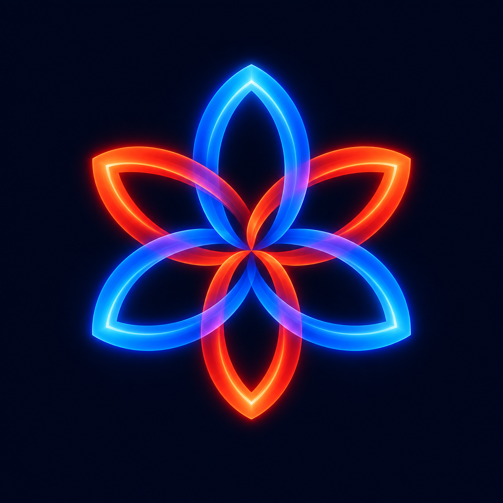
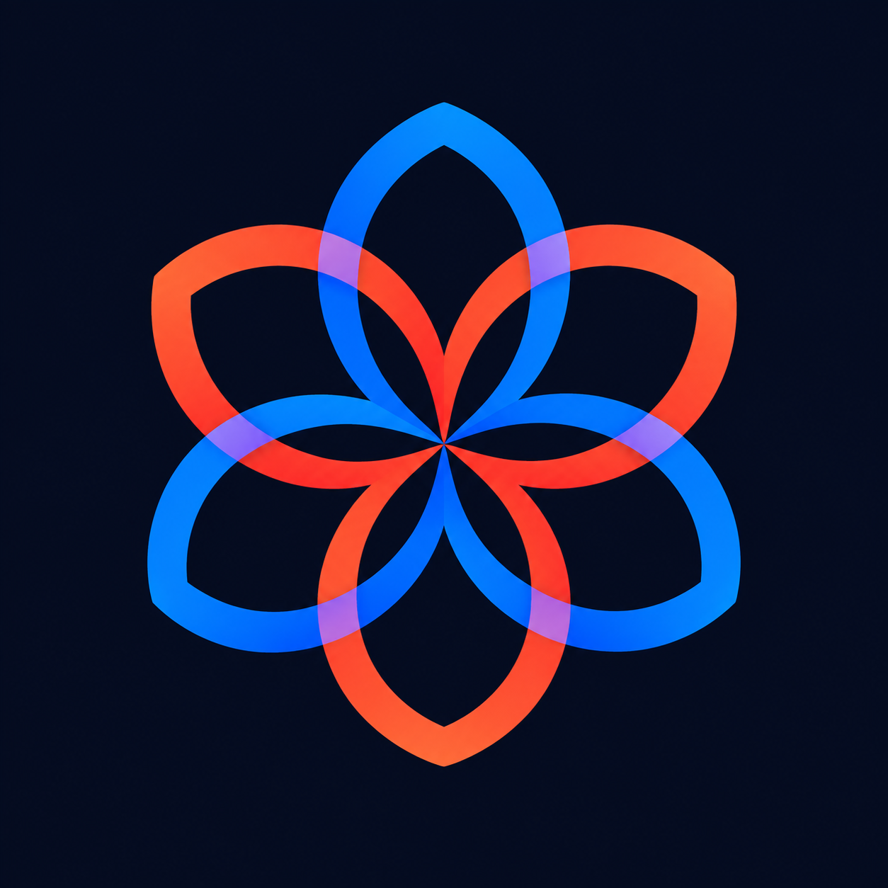
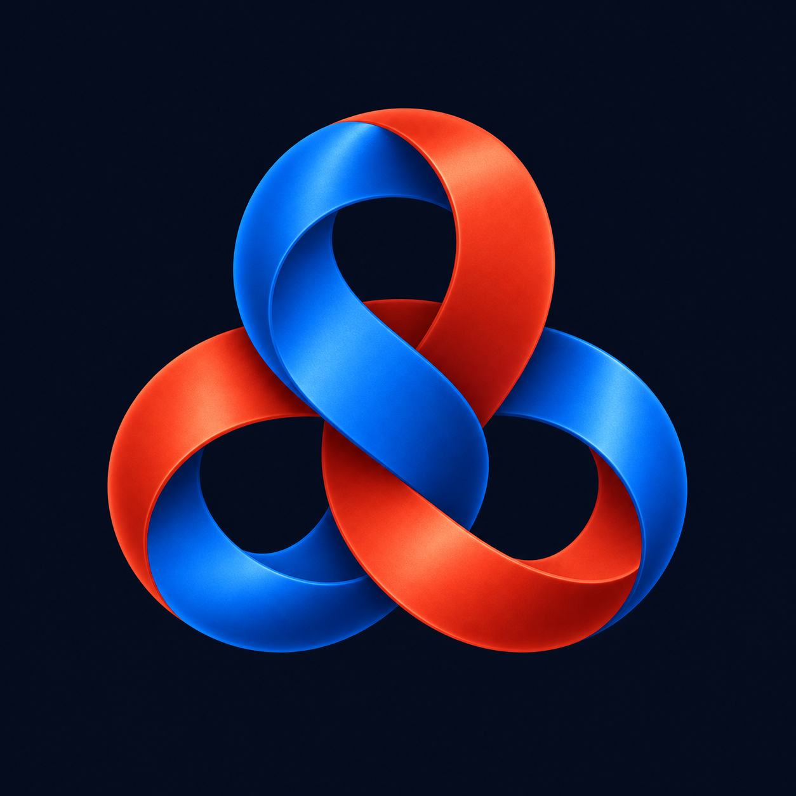
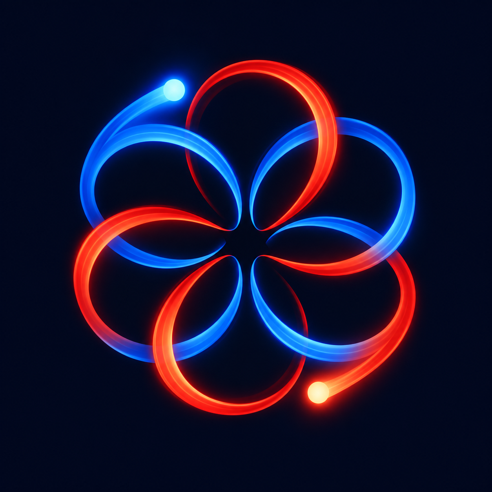

Four icon directions, shown large and at launcher size.

Bright, dimensional, close to the animated trails.

Clean edges, open space, strong small-size recognition.

A tactile knot with a bold, compact silhouette.

Two moving points and the paths they leave behind.